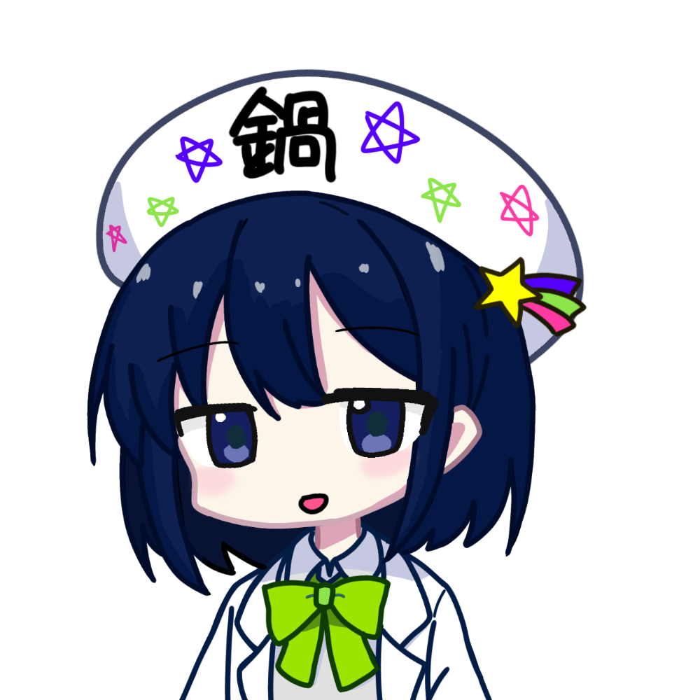
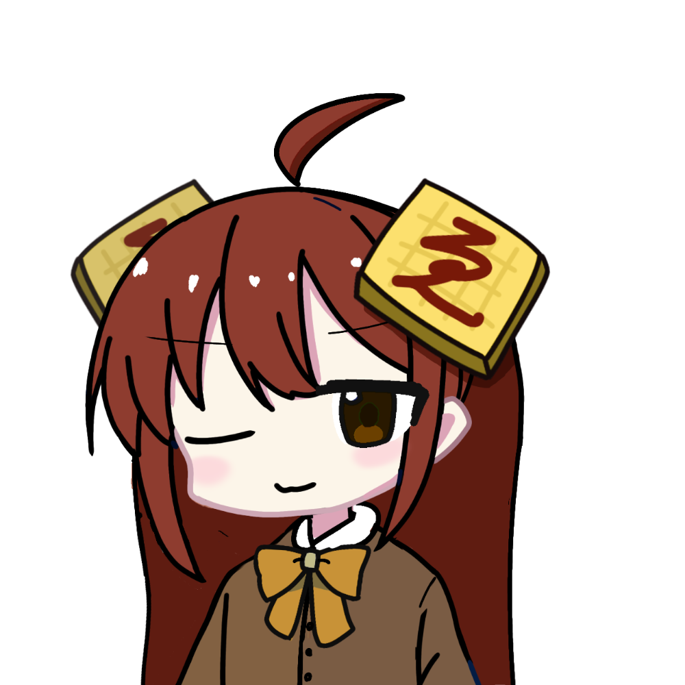
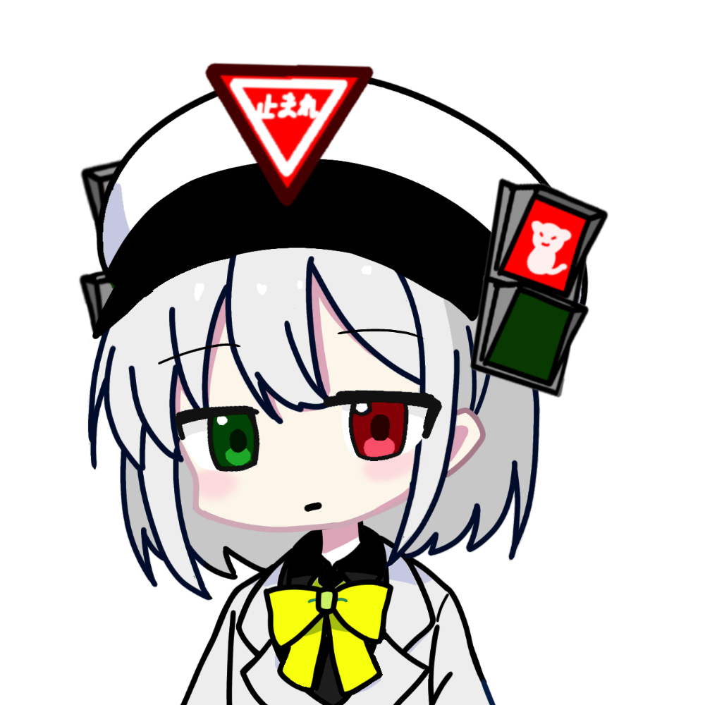
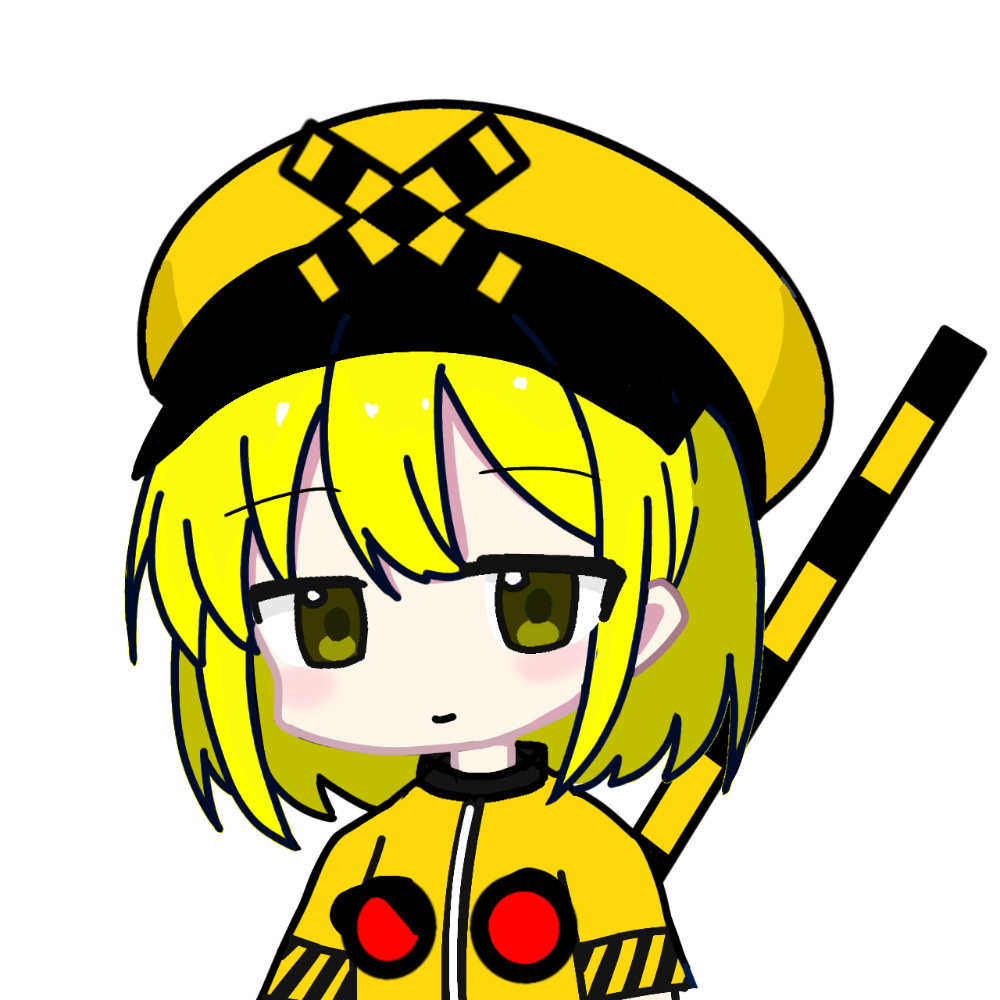
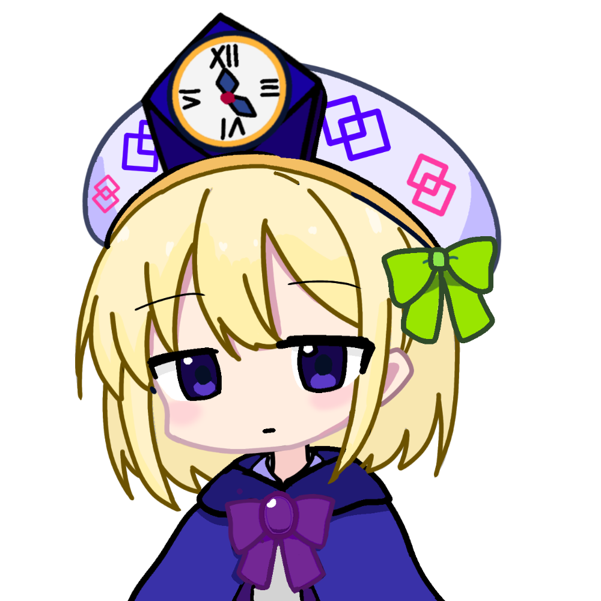
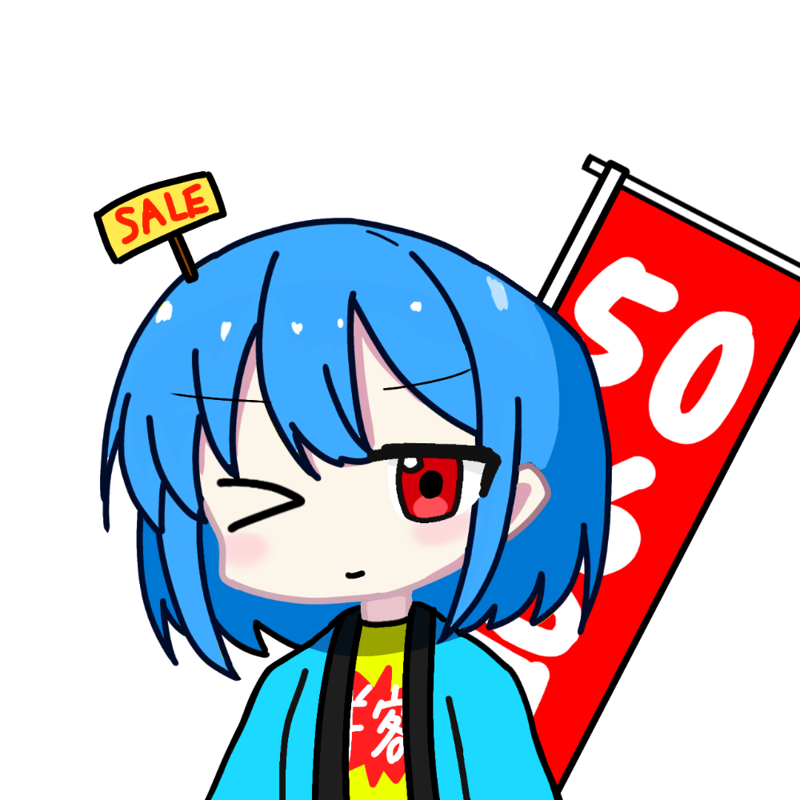
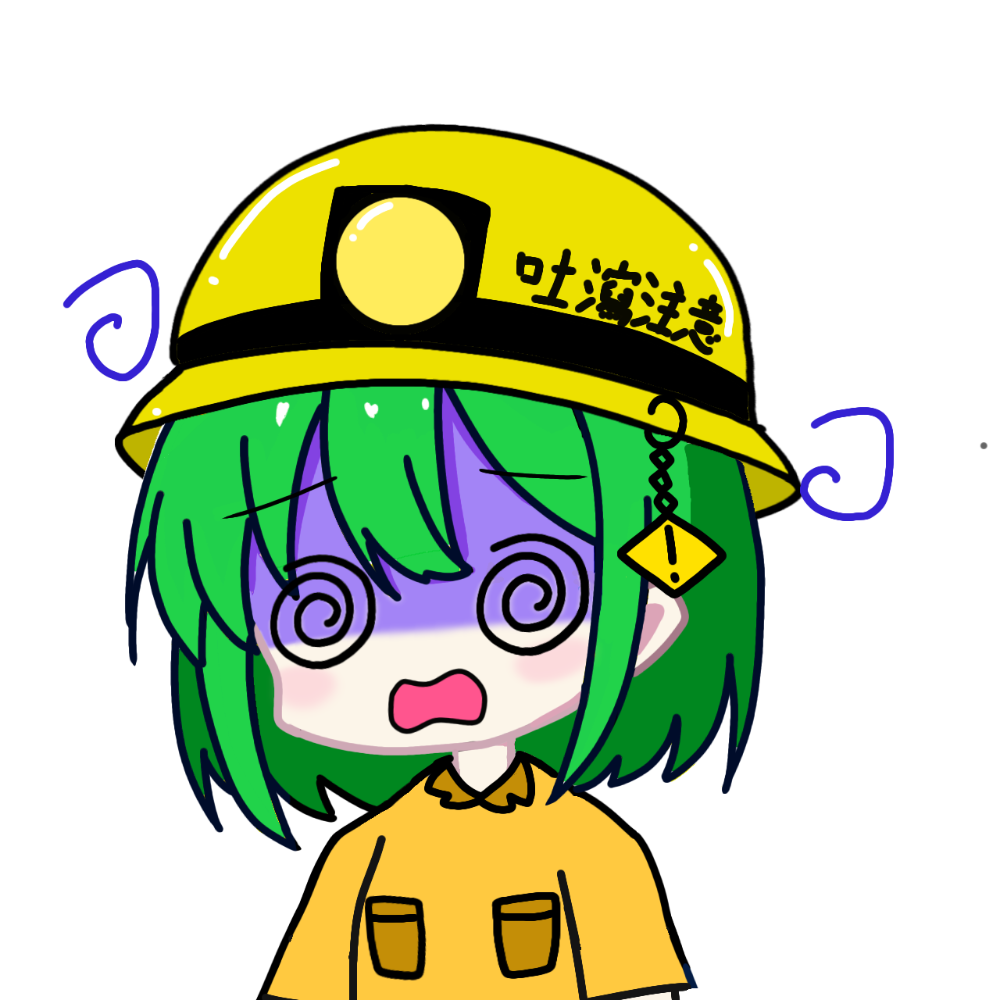
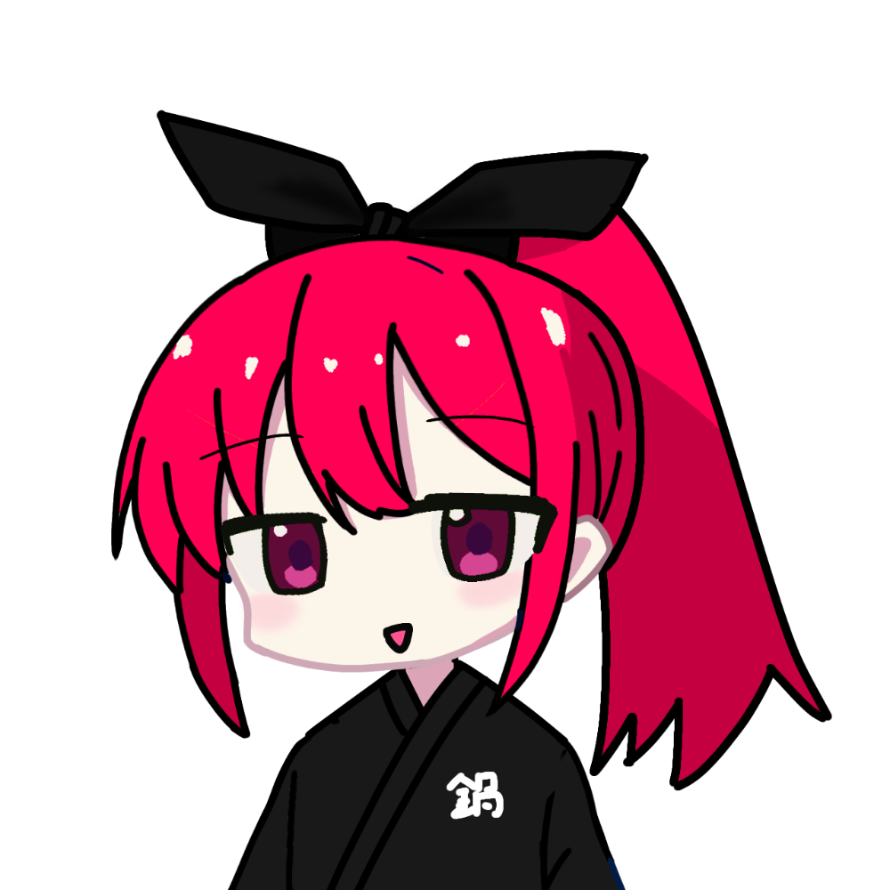
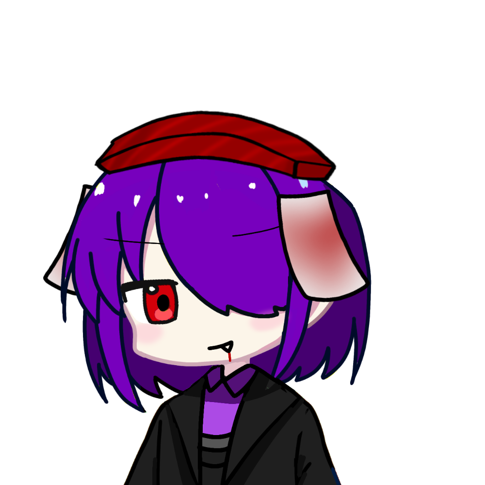

キャラクター紹介

にゃんこ鍋
きゃらめると双子の姉妹。つばのない帽子を被った女の子。最近は片目隠れたロングヘアーにイメチェンした。好物は鍋料理で他のものは滅多に食べない。科学者であり、またその技術で人を毒殺し鍋にして食べる、闇鍋の魂が宿っている。

きゃらめゑ
にゃんこ鍋と双子の姉妹。頭の両端にホンモノ のキャラメル。ほんのりあまい香りがし、 学校ではこの匂いで周囲の人が授業に集中で きなくなる。暑い日は溶けるのでニセモノのにおい付き消しゴムに しているらしい。お嬢様ぶって自慢することが趣味で皆 からあんまり好かれないようだ。

信号機
中古で買った信号機を背中に背負っている。両目とリボンで信号機の色を表している。帽子の歩行者信号の色で機嫌を表している。

踏切
中古で買った遮断器を背中に背負っている。胸にランプを着用していて、点滅で機嫌を表している。
ランドル
眼科の看護師。右目は無く、眼帯で隠している。名前の由来はランドルト環から。

孤暦廻
にゃんこ鍋の並行世界の住民。画像は旧孤暦廻の画像。紫のマントと帽子には時計。

青瑠
スーパーのバイトの女の子。

吐露っ子
常に酔って吐く炭鉱で働く少女。常時トロッコに乗って移動。線路を敷かないと走れないので

冇咲
camming soon

ドラＱ血鬼
ドラキュラマットで血を吸う。人の血より魚の血が好き。

キセのん
camming soon